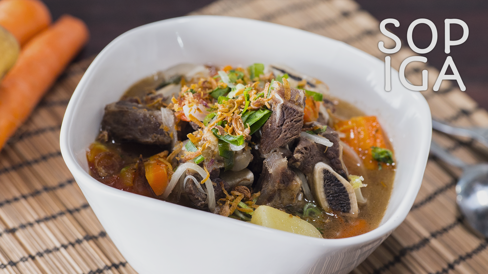

Sop iga sapi andalan kedoyanan paksu dan anak-anak
Bahan-bahan
- 1 kg iga sapi, cuci bersih, tiriskan
- Secukupnya air didihkan utk rebusan awal
- 2 liter air
- 2 batang wortel, potong sesuai selera
- 2 buah kentang, potong sesuai selera
- 1 buah bawang bombay ukuran sedang, potong kotak besar
- 1 batang kayumanis kurleb 3 cm
- 4 butir cengkeh
- 3 butir kapulaga jawa, ambil isinya
- 2 batang bagian putihnya daun bawang, potong-potong
- Secukupnya garam, gula dan kaldu bubuk (saya pakai kaldu jamur)
- Secukupnya margarine untuk menumis
Bumbu yg dihaluskan :
- 7 siung bawang putih
- 1 sdt merica butir
- 1/2 bagian biji pala uk. kecil
Pelengkap :
- Emping melinjo
- Seledri
- Bawang goreng
- Jeruk limau
- Sambal rawit
Langkah Langkah
- Didihkan secukupnya air, lalu masukan potongan iga sapi, rebus kurleb 5 menit, angkat, tiriskan, buang airnya ya karena perebusan pertama ini utk menghilangkan darah dan sebagian lemak supaya airnya nanti tidak terlalu berlemak. Lalu rebus kembali daging iga dan 2 liter air sampai lunak. (Saya pakai pressure cooker 35 menit). Sisihkan.
- Tumis potongan bawang bombay menggunakan margarine sampai harum dan sisinya berkaramel. Masukan bumbu halus, tumis lagi beberapa saat, kemudian masukan kayumanis, cengkeh dan kapulaga, tumis sampai matang.
- Masukan tumisan bumbu yg sudah matang kedalam rebusan iga sapi, aduk rata. Nyalakan kompor. (Boleh ditambahkan air jika air menyusut banyak saat proses perebusan). Lalu masukan kentang dan wortel, beri garam, gula dan kaldu bubuk, masak sampai wortel dan kentang matang. Tes rasa. Matikan kompor. Terakhir masukan potongan batang daun bawang, aduk rata kembali. Angkat
- Sajikan hangat bersama nasi dan pelengkapnya.